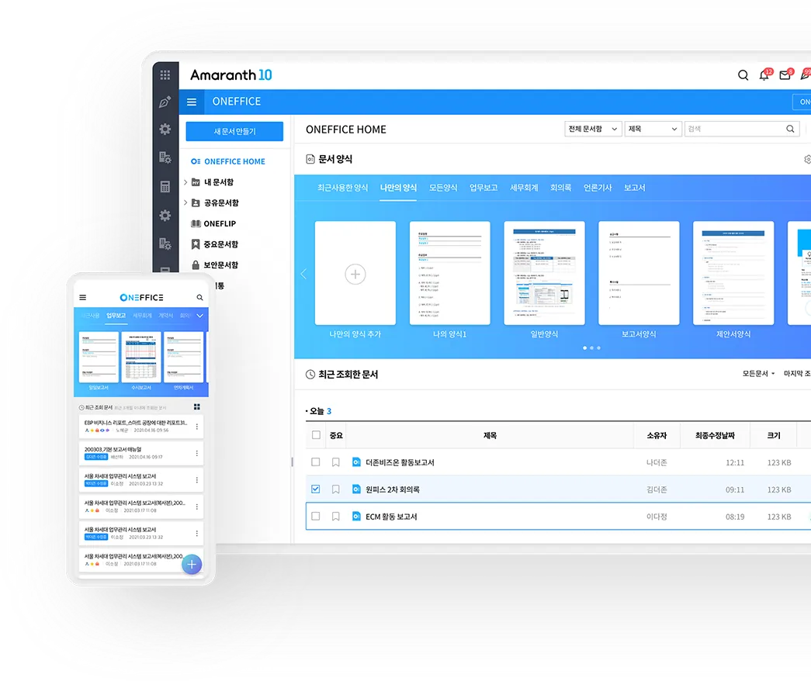

Amaranth 10 비영리 통합관리 — 재단·공공·학교 전용 ERP·그룹웨어
Amaranth 10 비영리 통합관리는
회계 · 인사 · 예산 + 그룹웨어 + 문서유통을
하나의 플랫폼에서 통합 제공합니다.
비영리 조직의 핵심 업무인 예산 편성·집행·결산, 인사·급여·4대 보험, 전자결재·그룹웨어 협업, 웹한글기안기 문서유통을 단일 시스템에서 원스톱으로 처리합니다. 데이터가 모듈 간에 실시간으로 연동되어 중복 입력과 오류를 원천 차단합니다.
비영리 업무 사이클의 표준 프로세스 제공
예산편성부터 구매·회계·인사·그룹웨어·문서유통까지 비영리 조직의 전 업무를 통합합니다
예산편성
연간/분기/월별 예산을 과목별·부서별로 편성하고, 집행 전 예산 잔액을 실시간으로 통제합니다.
구매·품의
필요 물품·용역에 대한 구매 품의서를 작성하며, 예산 한도 내에서 자동으로 통제됩니다.
회계처리
자동전표 생성, 장부관리, 결산 및 재무제표 작성, 세무신고 자동화까지 통합 회계 처리를 수행합니다.
인사·급여
인사·근태·연차·급여·세무관리를 연동하여 인건비 정산과 4대 보험 신고를 자동화합니다.
그룹웨어
메인포털, 일정관리, 전자결재, 메신저, 화상회의 등 조직 전체의 협업 인프라를 제공합니다.
문서유통·기안
웹한글기안기로 문서를 작성·결재하고, 완료된 문서를 자동 보관·검색하며 자산 실사까지 연계합니다.
자동으로 수집된
기관별 증빙 데이터의
자동 분개
회계담당자는 수집된 자료와 분개를
확인만 하고 바로 전표 처리를
진행할 수 있습니다.

관리업무 시간을 줄여주는
효율적인 근태관리
근로기준법에 근거하여 사전 검증 및
자동화 처리를 통한
효율적인 근태관리가 가능합니다.

다양한 서식과
문서 관련 모든 작업을
웹에서 편리하고 쉽게
문서 작성에 꼭 필요한 필수 기능을 중심으로
웹과 PC에서 문서를 쉽게 작성하고 공유할 수
있습니다.

나만의 똑똑한 AI비서로
통합 일정 공유와
중단 없는 업무 협업
개인 일정 뿐만 아니라 공유 일정까지
한 곳에서 관리하고 실시간 일정 관리로 언제
어디서나 일정 변동 사항 확인이 가능합니다.

Amaranth 10 비영리 통합관리의 주요 기능
예산·회계·인사·그룹웨어·문서유통 모듈을 세분화하여 관리합니다
부서별·과목별 예산 편성
연간/분기/월별 예산을 과목별·부서별로 세분화하여 편성합니다. 예산 이월 및 추가 편성이 가능하며, 집행 현황을 실시간으로 확인할 수 있습니다.
예산 잔액 자동 통제
구매 품의서 작성 시점부터 예산 잔액을 자동 체크하여 초과 지출을 원천 차단합니다. 예산과목별 잔액과 집행률을 한눈에 파악할 수 있습니다.
예산 집행 현황 리포트
예산과목별·부서별·기간별 집행 현황을 리포트로 확인합니다. 미집행 예산과 초과 집행 여부를 자동으로 경고하여 투명한 예산 운영을 지원합니다.
자동 전표 생성 및 승인
구매·검수·대금지급 데이터를 기반으로 전표가 자동 생성됩니다. 전표 분개와 승인 권한을 설정하여 업무 효율을 극대화합니다.
총계정원장·일계표·월계표
일계표·월계표·총계정원장·현금출납장 등 다양한 장부를 실시간으로 조회하고 출력합니다. 계정과목별 잔액과 변동 내역을 한눈에 파악합니다.
결산 및 재무제표 자동 생성
결산 자료를 자동 집계하여 재무상태표·손익계산서·현금흐름표 등 주요 재무제표를 생성합니다. 비영리 특화 결산 양식(사업보고·기부금명세 등)을 지원합니다.
세무신고 자동화
부가가치세·원천세·종합소득세 등 주요 세무 신고 자료를 자동 생성하고 홈텍스 연계를 통해 전자신고를 지원합니다. 비영리 법인 특화 신고 양식을 제공합니다.
인사·근태·연차 통합 관리
사원 기본 정보·발령·채용·퇴직까지 인사 이력을 체계적으로 관리합니다. 근태·연차·휴가를 자동으로 집계하고 잔여 일수를 실시간으로 확인합니다.
급여 계산 및 대장 관리
기본급·수당·공제를 자동 계산하여 급여 대장을 생성합니다. 급여 이체 파일을 은행별 포맷으로 출력하고, 급여명세서를 전자결재 또는 이메일로 배포합니다.
4대 보험 자동 신고
건강보험·국민연금·고용보험·산재보험 가입·상실·변동 신고를 자동 생성하여 전자신고합니다. 보험료 계산과 납부 내역을 자동으로 집계합니다.
원천징수·연말정산
근로소득 원천징수와 연말정산을 시스템 내에서 처리합니다. 간이세액표 자동 적용, 근로자 소득공제 자료 수집, 환급/추가 납부 계산까지 완전 자동화됩니다.
맞춤형 업무 포털
부서별·직급별 맞춤 대시보드를 제공합니다. 공지사항·전자결재 대기함·일정·업무 현황을 한 화면에서 확인하며, 위젯을 자유롭게 배치할 수 있습니다.
유연한 결재 라인 설정
품의·품의(지출)·품의(계약) 등 비영리 조직 특화 결재 양식을 제공합니다. 결재 라인을 부서·직급·프로젝트별로 자유롭게 설정하고, 대결·위임 기능을 지원합니다.
조직 일정 공유 및 알림
부서별·프로젝트별 일정을 공유 캘린더로 관리합니다. 회의실 예약과 연동되며, 일정 알림을 메신저·이메일·푸시로 자동 전송합니다.
실시간 협업 커뮤니케이션
조직 내 메신저를 통해 빠른 업무 소통이 가능합니다. 화상회의·화면 공유·파일 전송을 지원하여 재택근무·재난 상황에서도 업무가 중단되지 않습니다.
브라우저에서 한글 문서 작성
별도 프로그램 설치 없이 브라우저에서 한글 문서를 작성·편집할 수 있습니다. 기안·결재·반려·보완 요청까지 전자결재와 원스톱으로 연동됩니다.
문서 기안·결재·공람
작성한 문서를 전자결재 시스템에 바로 기안할 수 있습니다. 결재 완료 후 자동으로 문서 번호가 부여되고, 공람·열람 권한을 세분화하여 관리합니다.
자동 보관 및 Full-text 검색
결재 완료 문서는 자동으로 중앙 보관함에 저장됩니다. 문서 제목·내용·작성자·기간 등 다양한 조건으로 Full-text 검색이 가능하며, 권한별 열람을 통제합니다.
연관 문서 연결 및 협업
유사한 과거 문서나 참고 문서를 연결하여 함께 열람할 수 있습니다. 문서 내 댓글 기능으로 결재자와 실무자가 실시간으로 소통하며 문서를 다듬어갑니다.
Amaranth 10 비영리 통합관리로
스마트한 조직 운영을 시작하세요.
예산·회계·인사·그룹웨어·문서유통을 하나의 플랫폼에서 통합 관리합니다.
담당 컨설턴트가 친절하게 안내해 드리겠습니다.